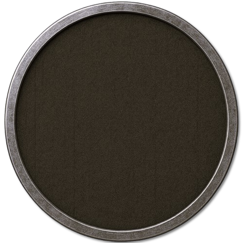
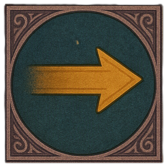
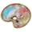
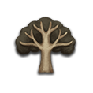

Aleria Almanach · Stammbaum
—



Spezialfall
Nur auf diesem Gerät
Vollständig mit Bildern
Rohdaten ohne Bilder
Geöffnete Familienakte
Ziehen zum Verschieben · Mausrad zum Zoomen · Karte wählen für Details
Neue Familie · Schnellstart
Mann · Kernlinie
Frau · angeheiratet
Stammbaum-Generator
Personenakte
Person & Verbindung gemeinsam anlegen
Genealogische Verbindung
Darstellung
Aufbau der Linie
Absolute Generationsbarriere
Dieser Zeitsprung liegt immer allein zwischen dem Hauswappen und der nächsten belegten Generation.
Knoten bearbeiten
Vorgelagertes Ursprungshaus
Verknüpfung zu einer anderen Familienakte
Unterbrochene Überlieferung
Eine vorhandene Verbindung wird bevorzugt. Mit „Nur die ausgewählte Person“ lässt sich der Zeitsprung auch ohne Partner direkt nach einer einzelnen Figur setzen.
Der Knoten kann zunächst ohne Nachkommen angelegt werden. Über die Personenakte des Paares lässt sich später direkt eine neue Person dahinter ergänzen.
Rückwärtsverknüpfung
Familienregister
Die ersten vier Pfadstufen werden zugleich als Königreich, Grafschaft, Baronie und Stammsitz gespeichert. Der Adelsrang bleibt davon unabhängig.
Geschützter Arbeitsbereich
Das Passwort ist nicht korrekt.
Blut, Bündnisse und Seitenlinien